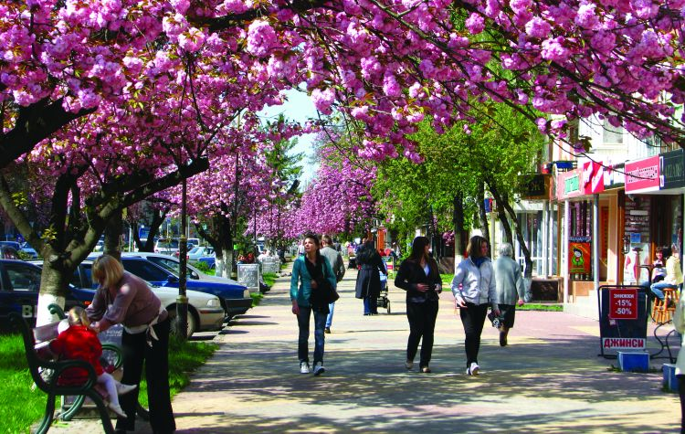
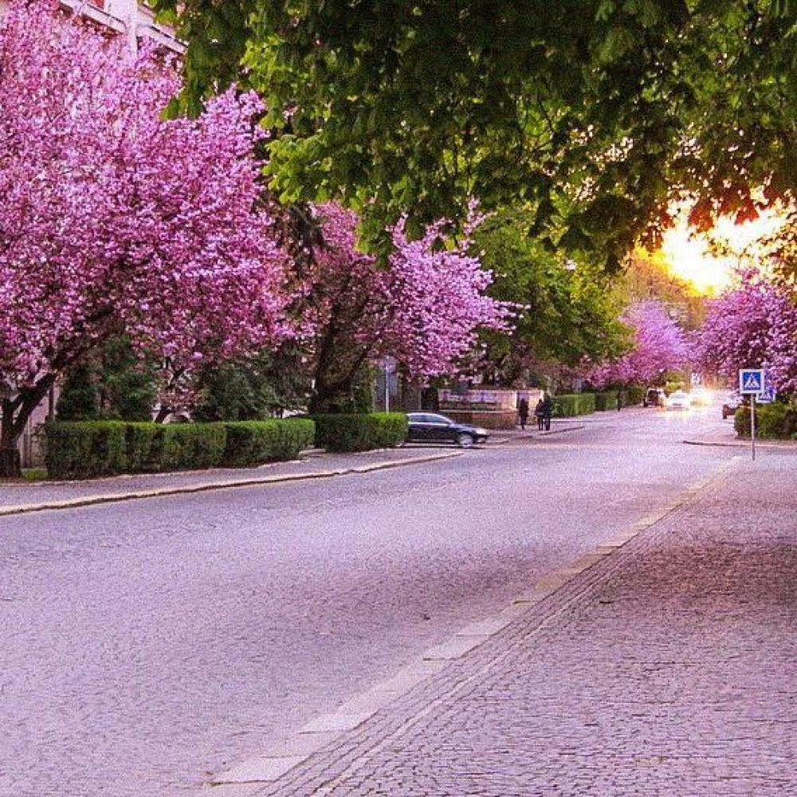
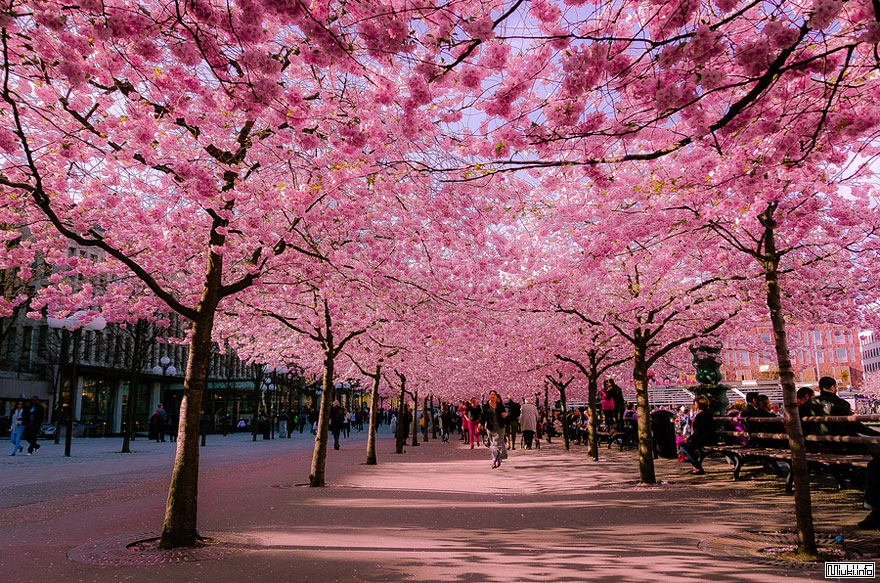

|  |  |  |
ФЕСТИВАЛЬ «САКУРА ФЕСТ» — ЦВІТІННЯ САКУР ТА ІСТОРИЧНІ ПАМ'ЯТКИ УЖГОРОДАЯк відомо, сакура вважається символом Японії. Квітування сакури довгий час сприймалося як виключно японське традиційне видовище. Однак сьогодні зовсім не обов'язково вирушати в далеку Японію, щоб побачити це диво, адже в наші дні сакура росте в багатьох куточках землі, в тому числі і в Україні, в закарпатському містечку Ужгород. Традиційно цвітіння японської вишні збігається з культурною подією — фестивалем «Сакура Фест», який щороку припадає на кінець квітня-початок травня. Цвітіння сакури триває близько 2 тижнів і припадає приблизно на кінець квітня — початок травня, залежно від погодних умов. У Японії цвітіння сакур асоціюється зі швидкоплинністю людського життя. У поезії дуже часто опадання листя цього дерева порівнюють з минулою любов'ю і юністю, а в часи Другої світової війни ніжні рожеві квітки використовувалися в якості пропаганди для підняття духу в Японії. Сьогодні в Ужгород приїжджають туристи з усього світу, щоб подивитися на дивовижне видовище і зробити красиві унікальні світлини. У цей весняний період проводиться музично-творчий фестиваль «Сакура Фест». Всі, хто вже відвідав Ужгород в цей період, змогли переконатися в неймовірній красі міської перлини — алеї Сакур з величезними рожевими суцвіттями, які в момент цвітіння перетворюють її в райський сад, оповитий рожевими хмарами. Крім того, в цей період можна стати учасником культурного заходу «Сакура Фест» і спробувати себе в одному з його численних заходів або просто стати глядачем цього дійства. Приїжджайте, щоб відчути красу дива природи і зануритися в історичну спадщину українського міста Ужгорода, а також провести незабутні вихідні в нашому готелі. Створено за підтримки Сергіус Кампотус) |
Історія «Сакура-Фесту»Ужгород належить до найдавніших містах України. Крім історичної перлини — Ужгородського замку, чарівної алеї Сакур, багатої дендрологічної програми, місто приваблює безліч туристів навесні також і культурним заходом — музично-творчим фестивалем «Сакура Фест», який традиційно проводиться в міжнародному форматі. На цей період символом міста стає Граф Сакура. В рамках фестивалю проводиться безліч заходів:
|
|